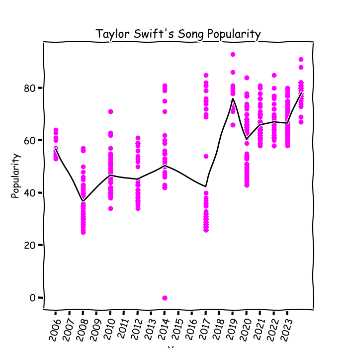

Hi! I am currently a student at the University of Michigan double majoring in Data Science and Biopsychology, Cognition, and Neuroscience with a minor in Quantitative Methods in the Social Sciences. I am graduating this coming May 2025.
The following visualizations were created as part of the course SI 649.
